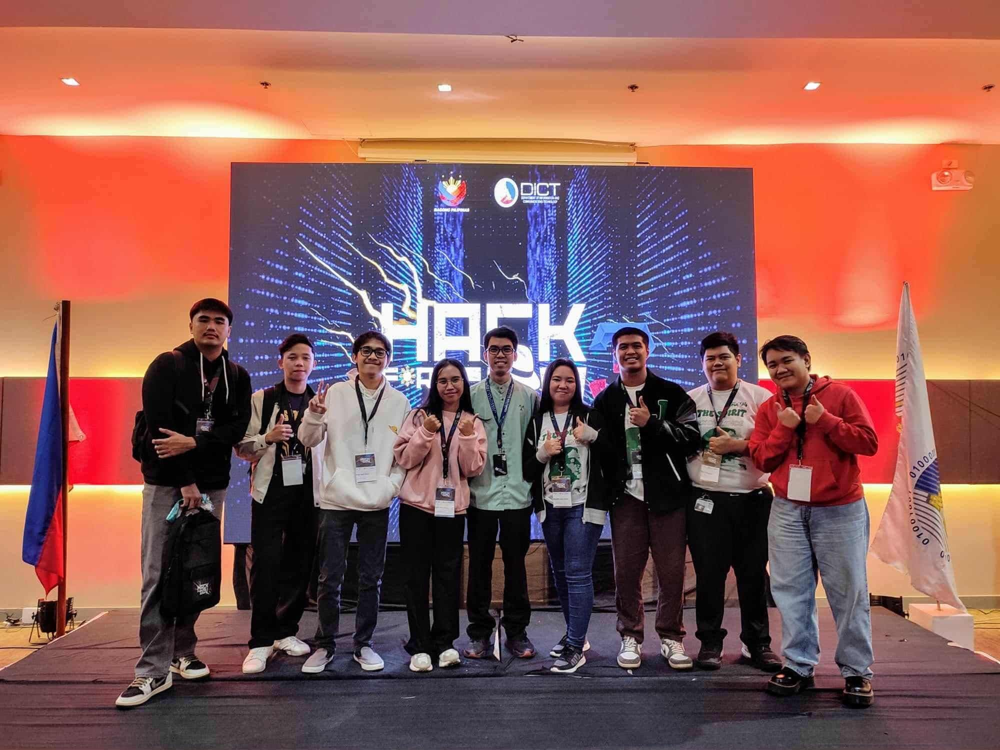
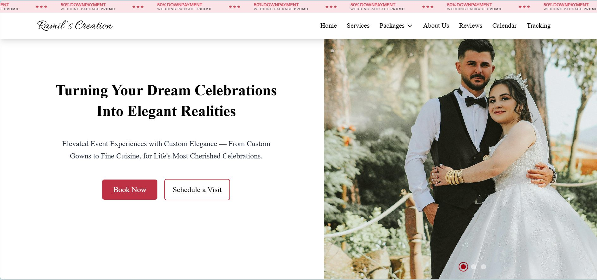
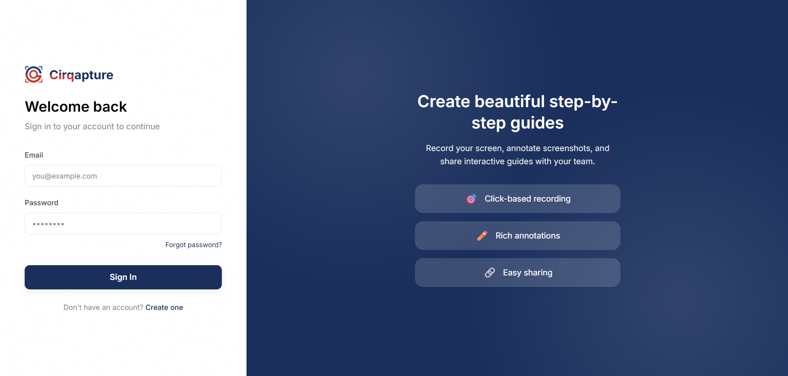
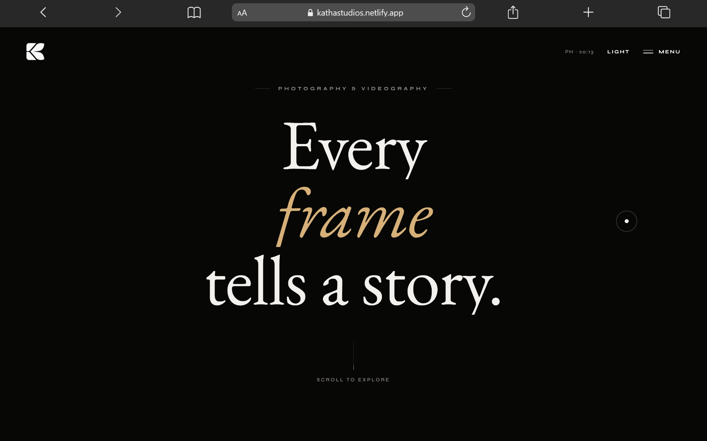
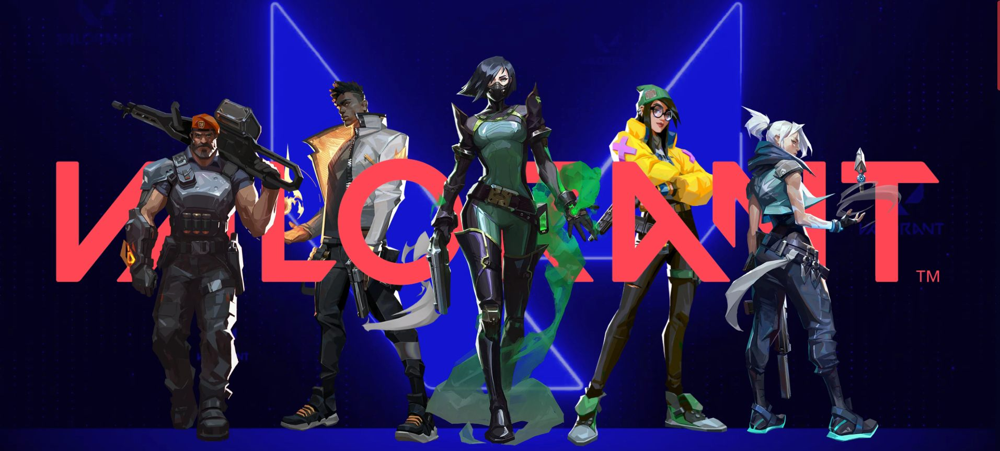
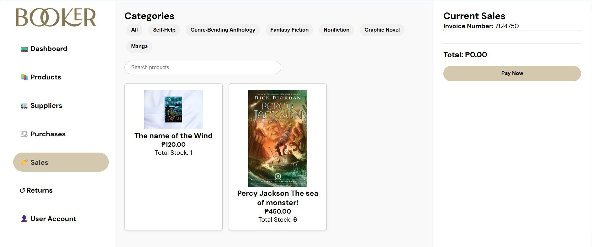

Frontend dev & BSIT grad from La Salle University–Ozamiz. I like clean code, tiny details, and interfaces that feel like someone actually made them. Go on, draw me something →
I got into frontend because I liked making things people actually enjoy using, not just things that work. During my internship at ASV Business Solution, I helped built the annotation canvas for Cirqapture — the same kind of drawing tool you just played with — wired up a livestock dashboard for Farmyra, and restructure NoDiy into a proper monorepo.
I hold a PhilNITS certification, have joined the regional HackForGov CTF twice, and always down to prototype something on a Friday night.


An events management web app — I led all frontend work with React and Tailwind CSS, with Laravel powering the backend API. Built with a 3-person team.

A screen-capture and annotation Chrome extension. I built the Fabric.js canvas integration, SVG export, PDF generation, and a real-time collaborator sharing workflow.

A clean, responsive studio landing page designed and built end-to-end for a real client — strong visual hierarchy, modern interactions, deployed on Netlify.


A point-of-sale system with inventory tracking and sales processing — full-stack fundamentals built with plain PHP, MySQL, HTML, CSS, and JavaScript.
Internationally recognized IT certification covering core IT concepts, systems, networks, databases, and information security.
DICT Region 10 Capture-The-Flag competition, Iligan City & Cagayan de Oro City.
Usability testing and user-centered design, with Ms. Lucy Mae Tan.
Branching and collaborative workflows, with Mr. Zyndly Kent Baja.
AWS services and scalable web architecture, with Ms. Darla David.
Data visualization fundamentals, with Mr. Bonnie Jefferson Padilla.
I'm actively looking for frontend developer roles. If you've got a project, a team, or just want to say hi — my inbox is open.